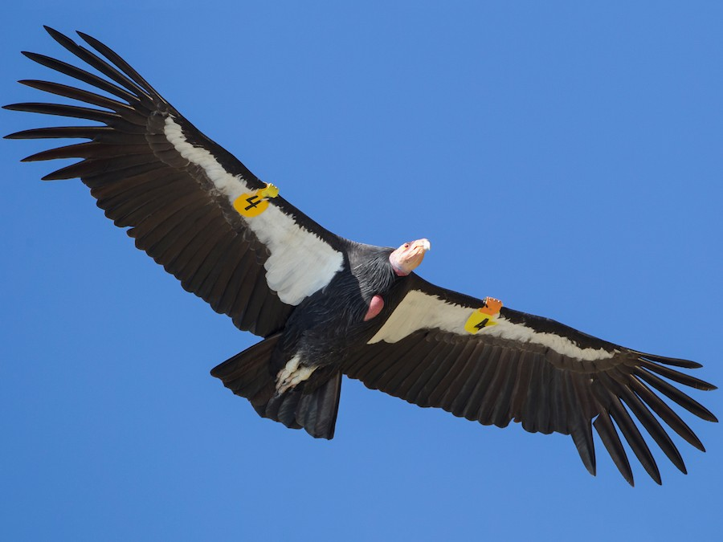
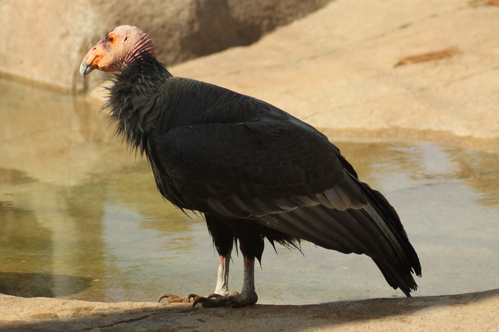
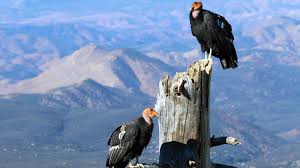

El **Cóndor de California** (*Gymnogyps californianus*) es la mayor ave terrestre de Norteamérica y una de las especies con el programa de conservación más intensivo del mundo. Se distingue por su cabeza y cuello sin plumas, que varían de color según la edad y el estado de ánimo, y por sus enormes alas de hasta 3 metros de envergadura. Llegó a estar al borde de la extinción en 1987, cuando todos los 27 individuos restantes fueron capturados para un programa de cría en cautividad. Gracias a este programa, su población ha crecido lentamente y ahora sobreviven cientos de cóndores, aunque todavía están clasificados como **en peligro crítico de extinción**. Su principal amenaza es el envenenamiento por plomo que ingieren al consumir carroña cazada con munición de plomo.


